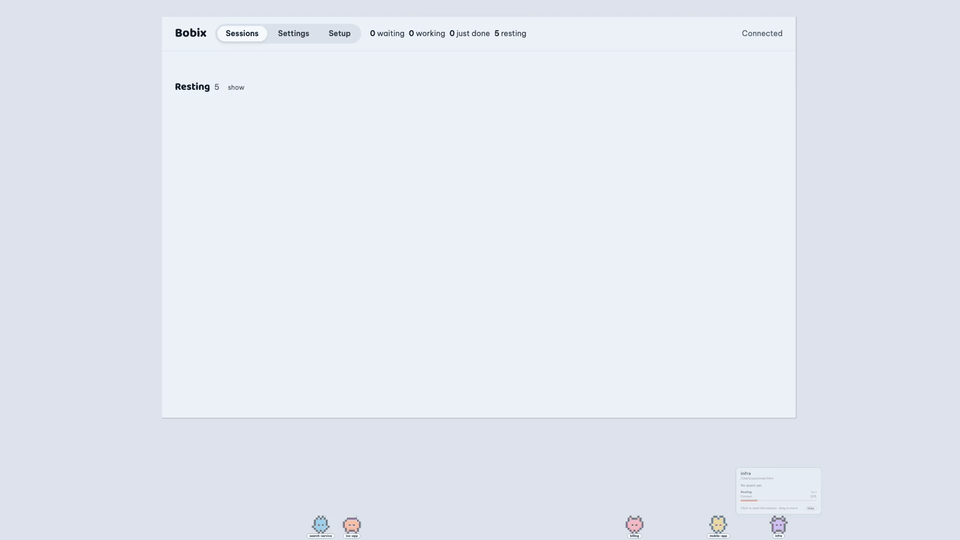
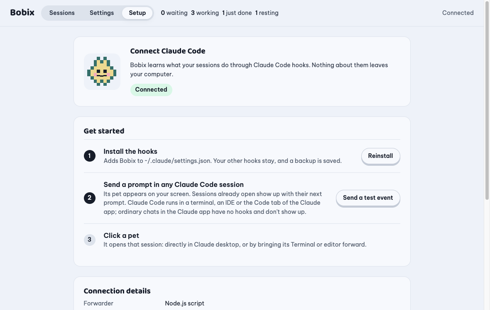
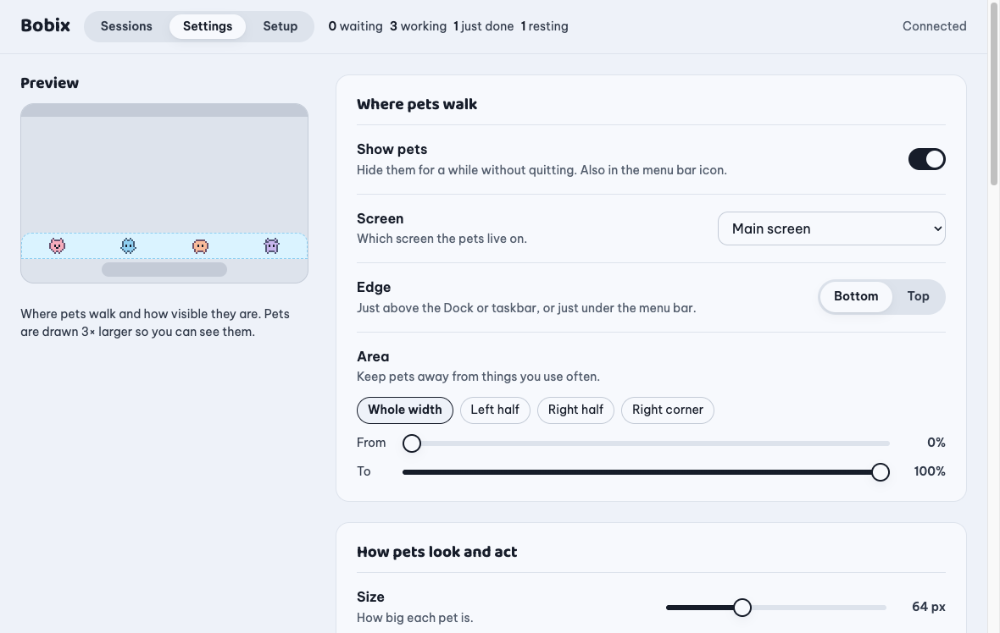

Mỗi session Claude Code là một chú thú pixel trên màn hình của bạn.
Liếc xuống là biết session nào đang làm, session nào cần bạn, session nào đã xong, không phải mở cửa sổ nào.

Vì sao có Bobix
Chạy vài session Claude Code cùng lúc thì bạn sẽ phải bấm qua từng cái để xem: còn đang làm không? có kẹt ở bước xin quyền không? xong chưa? Bobix cho mỗi session một chú thú đi dọc mép màn hình để trả lời ngay những câu đó.
| Chú thú… | nghĩa là |
|---|---|
| đi lại, bong bóng kiểu đang chạy lệnh | Claude đang làm |
| nhảy, bong bóng đỏ Cần bạn duyệt: Bash | Claude đang chờ bạn duyệt |
| cười, bong bóng xanh Xong quest! | session đã xong lượt |
| ngủ | không có gì xảy ra; ngủ lâu thì tạm rời màn hình |
Bấm vào chú thú để mở đúng session đó. Rê chuột lên để xem việc đang làm, trạng thái và lượng context còn lại.
Tính năng
Mỗi session một chú thú, dáng theo project bản thử v0.1.4
Mọi session của cùng một project (kể cả git worktree) có chung dáng nhưng mỗi session một màu, tên lấy theo tiêu đề session. Có thể đặt ảnh riêng làm mặt pet cho từng project trong bảng điều khiển (Đổi pet…).
Session phụ thành một gia đình
Trong app Claude desktop, session tách ra từ một session khác đứng cạnh session gốc, và bảng điều khiển cho biết nó tách từ đâu, còn bao nhiêu session phụ đang chạy hay cần bạn.
Bóng bay chờ duyệt và đã xong bản thử v0.1.4
Tối đa 10 session phụ đứng ngay cạnh session gốc trên cùng một bảng tên; kéo con nào cũng kéo cả gia đình. Khi chỉ một hai con cần bạn, mỗi con cầm một quả bóng pixel: "!" màu cam là đang chờ bạn, dấu tích xanh là đã xong; bấm vào sẽ mở thẻ có Cho phép / Từ chối. Từ ba con trở lên, một bong bóng gộp chung.
Cho phép hoặc Từ chối ngay trên chú thú
Khi Claude xin quyền, bấm Cho phép, Luôn cho phép hoặc Từ chối trên chú thú, trong bảng điều khiển hoặc trên thông báo (macOS). Không ai trả lời trong thời gian bạn đặt (mặc định 20 giây) thì terminal hỏi như bình thường.
Bấm để mở
Vào thẳng session trong app Claude desktop, hoặc đưa cửa sổ Terminal, iTerm, VS Code lên trước.
Bảng điều khiển và thông báo
Mọi session xếp theo mức cần bạn chú ý, kèm câu trả lời cuối và nhật ký các tool đã dùng. Thông báo khi session cần duyệt hoặc đã xong, có âm thanh nếu muốn.
Không che việc của bạn
Chọn màn hình, mép trên hoặc dưới, đoạn mép được đi, kích thước và độ rõ. Chú thú mờ đi khi chuột lại gần, mọi chỗ không phải chú thú đều cho click xuyên qua.
Góp ý bản thử v0.1.4
Nút ở đầu bảng điều khiển (và trong menu khay) điền sẵn báo lỗi hoặc ý tưởng vào form tạo issue mới của GitHub. Bạn đọc lại ở đó rồi tự gửi.
Nhẹ máy và riêng tư
Khoảng 1–2 % CPU khi các chú thú đứng yên. Chạy trên máy bạn, không cần tài khoản, có tiếng Anh và tiếng Việt, trên macOS, Windows và Linux.
Các tính năng có nhãn bản thử v0.1.4 nằm trong các bản thử (release candidate) của v0.1.4, chưa có trong bản ổn định v0.1.3.


Cài đặt
Tải file cài cho máy của bạn. Các nút này luôn trỏ tới phiên bản ổn định mới nhất.
Các bản thử (release candidate, ví dụ v0.1.4-rc.3) được đánh dấu là pre-release trên GitHub, nên các nút trên tải bản ổn định mới nhất (hiện là v0.1.3). Muốn dùng thử bản mới hơn, hãy chọn trong tất cả bản phát hành.
Không chắc Mac của bạn chip gì? Menu Apple → Giới thiệu về máy Mac này → "Chip".
Bạn cần: Claude Code (CLI, app Claude desktop hoặc extension cho IDE) trên macOS gần đây, Windows 10/11, hoặc Ubuntu / Debian. Nên có Node.js nhưng không bắt buộc.
macOS
- Mở file
.dmgrồi kéo Bobix vào Applications. - Bản build chưa được Apple notarize nên lần đầu mở sẽ bị chặn. Hãy bấm chuột phải vào app trong Applications → Open → Open, hoặc chạy
xattr -cr "/Applications/Bobix.app"trong Terminal rồi mở như bình thường. - Bobix nằm trên thanh menu (biểu tượng chú thú nhỏ), không có biểu tượng trên Dock.
Windows
- Chạy
Bobix-windows-x64.exe. App cài cho riêng tài khoản của bạn, không cần quyền admin. - File cài chưa được ký số nên SmartScreen có thể báo "Windows protected your PC". Bấm More info → Run anyway.
- Bobix nằm ở khay hệ thống (góc dưới bên phải, có thể nằm trong mũi tên ^).
Linux (Ubuntu / Debian)
Cài file .deb, rồi mở Bobix từ menu ứng dụng (hoặc chạy bobix). Máy ARM dùng bobix-linux-arm64.deb.
sudo apt install ./bobix-linux-amd64.deb- Nền trong suốt cần desktop có compositing (GNOME, KDE và hầu hết các desktop khác đều mặc định có).
- Để bấm vào chú thú đưa được terminal lên trước, hãy cài xdotool:
sudo apt install xdotool. - Trên Wayland, Bobix tự khởi động lại qua XWayland để chú thú luôn nằm trên cùng. Đặt
BOBIX_WAYLAND=1nếu muốn giữ Wayland gốc. - Các bản Linux khác chưa có gói cài.
Kết nối Claude Code
- Lần đầu, bảng điều khiển mở ở trang Kết nối. Bấm Cài hooks. Bobix thêm hooks của nó vào
~/.claude/settings.json; các hook và cài đặt khác của bạn được giữ nguyên, và một bản backup được lưu cạnh file. - Gửi một prompt trong session Claude Code bất kỳ. Chú thú của nó sẽ xuất hiện ở mép dưới màn hình. Các session đang mở sẽ hiện sau prompt kế tiếp.
- Bấm vào chú thú để mở session của nó.
Gửi sự kiện thử (trong trang Kết nối) hiện một session giả nếu bạn muốn xem chú thú mà không cần dùng Claude.
Cài bằng terminal
macOS (chip Apple; Mac chip Intel dùng Bobix-mac-x64.dmg). Nếu Bobix đang chạy thì thoát trước.
curl -fL -o /tmp/Bobix.dmg https://github.com/baonguyen-agilityio/bobix/releases/latest/download/Bobix-mac-arm64.dmg
hdiutil attach -nobrowse -quiet -mountpoint /tmp/bobix-dmg /tmp/Bobix.dmg
rm -rf /Applications/Bobix.app && cp -R /tmp/bobix-dmg/Bobix.app /Applications/
hdiutil detach -quiet /tmp/bobix-dmg && xattr -cr /Applications/Bobix.app && open /Applications/Bobix.appWindows (PowerShell):
$f = "$env:TEMP\Bobix-windows-x64.exe"; Invoke-WebRequest https://github.com/baonguyen-agilityio/bobix/releases/latest/download/Bobix-windows-x64.exe -OutFile $f; Start-Process $fUbuntu / Debian (amd64; máy ARM dùng bobix-linux-arm64.deb):
curl -fL -o /tmp/bobix.deb https://github.com/baonguyen-agilityio/bobix/releases/latest/download/bobix-linux-amd64.deb && sudo apt install -y /tmp/bobix.debXử lý sự cố và chi tiết hơn có trong hướng dẫn cài đặt (tiếng Anh).
Gỡ cài đặt
- Kết nối → Gỡ hooks. Chỉ các hook của Bobix bị xoá.
- Cài đặt → tắt Tự mở khi đăng nhập máy.
- Thoát từ biểu tượng ở khay / thanh menu rồi xoá app.
- Dọn thêm nếu muốn: xoá
~/.claude/bobix/, các bản backup~/.claude/settings.json.bak-bobix-*và thư mục cài đặt:~/Library/Application Support/Bobix(macOS),%APPDATA%\Bobix(Windows),~/.config/Bobix(Linux).
Quyền riêng tư
- Bobix chạy hoàn toàn trên máy bạn. Không cần tài khoản, không có analytics.
- Yêu cầu mạng duy nhất là mỗi ngày hỏi GitHub có bản mới chưa. Nó không gửi dữ liệu nào, và bạn tắt được (Cài đặt → "Báo khi có phiên bản mới").
- Hook chỉ gửi những gì chú thú hiển thị (tên tool, đường dẫn file hoặc lệnh, prompt của bạn), không bao giờ gửi nội dung file hay kết quả tool, và chỉ gửi tới Bobix qua
127.0.0.1, kèm token riêng của từng người dùng. - Những gì Bobix biết về các session chỉ nằm trong bộ nhớ và bị quên khi session kết thúc hoặc app thoát.
- Góp ý mở form tạo issue mới của GitHub trong trình duyệt; không có gì được gửi cho tới khi bạn tự bấm gửi ở đó.
Mọi thứ Bobix đọc, ghi và chạy: Privacy and security (tiếng Anh).